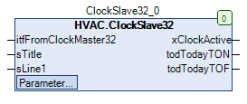
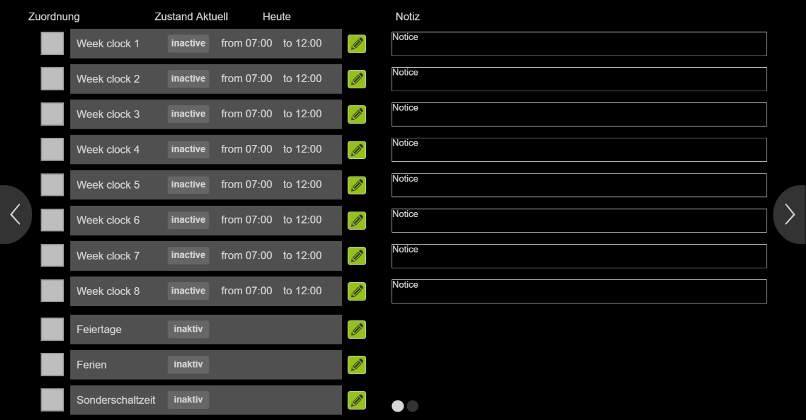

ClockSlave32 (FB)¶
FUNCTION_BLOCK ClockSlave32 EXTENDS Uhr_Base IMPLEMENTS IUhr
Kurzbeschreibung¶
Slave - Funktionsbaustein für ein Uhrensystem mit 32 Wochenuhren, 30 Feiertagen, 10 Ferienperioden und 5 Sonderschaltzeiten
Darstellung¶

Funktionsbeschreibung¶
Allgemeines¶
Dieser Funktionsbaustein dient als Slave - Funktionsbaustein für ein Uhrensystem mit 32 Wochenuhren, 30 Feiertagen, 10 Ferienperioden und 5 Sonderschaltzeiten.
Er erlaubt die individuelle Aktivierung / Deaktivierung der 32 Wochenuhrkanäle, des Feiertagekanals, des Ferienkanals sowie des Sonderschaltzeitenkanals ( FALSE = Deaktivierung, TRUE = Aktivierung ).
Die Verbindung zwischen dem Master - Funktionsbaustein und den Slave - Funktionsbausteinen wird dabei über den Ausgang itfToClockSlave32 bzw. die Eingänge itfFromClockMaster32 hergestellt.
Die Eingänge sTitle bzw. sLine1 erlauben die Festlegung der Bezeichnung des Titels bzw. der Zeile 1 in der Visualisierung.
Zustand des Slave - Kanals xActive¶
Der Ausgang xActive ( FALSE = nicht aktiv, TRUE = aktiv ) wird durch die aktuellen Zustände der zugeordneten Wochenuhrkanäle ( xClockCH_01 bis xClockCH_32 = TRUE )
des zugeordneten Feiertagekanals ( xPublicHoliday = TRUE ), des zugeordneten Ferienkanals ( xHoliday = TRUE ) bzw. des zugeordneten Sonderschaltzeitenkanals
( xSwitchTimeS = TRUE ) wie folgt festgelegt ( Hinweis: Kanäle, die nicht zugeordnet sind, nehmen automatisch den Zustand FALSE an ):
Wochenuhrkanäle Feiertagekanal Ferienkanal Sonderschaltzeitenkanal Zentrale Aktivierung ( Master ) Zentrale Deaktivierung ( Master ) xActive Hinweise FALSE FALSE FALSE FALSE FALSE FALSE FALSE Normalbetrieb - Aus TRUE FALSE FALSE FALSE FALSE FALSE TRUE Normalbetrieb - Ein X TRUE FALSE FALSE FALSE FALSE FALSE Feiertagebetrieb - Ein X FALSE TRUE FALSE FALSE FALSE FALSE Ferienbetrieb - Ein X X X TRUE FALSE FALSE TRUE Sonderschaltzeitenbetrieb - Ein X X X X TRUE FALSE TRUE Zentrale Aktivierung ( Master ) X X X X X TRUE FALSE Zentrale Deaktivierung ( Master )
Legende: X = beliebig
Zentrale Aufhebung aller Zuordnungen xResetAssignment¶
Dieser Sollwert / Parameter dient zur zentralen Aufhebung aller im Slave - Funktionsbaustein erfolgten Zuordnungen.
Visualisierung¶
Passendes Visualisierungselement aus der HVACV Visu Library: ClockSlave32_Clock7d1Ch_Start
Darstellung¶

Schnittstellen Visu-Element¶
Name Datentyp Typ Initialwert Funktion FB_ClockSlave32 ClockSlave32 VAR_IN_OUT Hier FB ClockSlave32 eintragen Bsp. PRG.ClockSlave32 FB_ClockMaster32 ClockMaster32 VAR_IN_OUT Hier zugehörigen(!) FB ClockMaster32 eintragen Bsp. PRG.ClockMaster32 BMS_Active BOOL VAR_INPUT BMS (Building Management System) GLT (Gebäudeleittechnik). Wenn BMS_Active = TRUE wird die Eingabe/Editierung der Uhren deaktiviert da diese dann nur über das BMS eingestellt werden können. Uhrzeiten können dann nur angeschaut werden.
Hinweis: VAR_IN_OUT Schnittstellen müssen belegt werden, VAR_INPUT sind optional.
Codesys¶
- InOut:
Scope Name Type Initial Comment Inherited from Input itfFromClockMaster32 IUhrProtocol Uhr_Base sTitle STRING Bezeichnung für den Slave - Funktionsbaustein sLine1 STRING Bezeichnung der Zeile 1 für den Slave - Funktionsbaustein ClockSlvPara stSlvClockData xSwitchTimeS BOOL Zuordnung des Sonderschaltzeitenkanals ( FALSE = nicht zugeordnet, TRUE = zugeordnet ) xPublicHoliday BOOL Zuordnung des Feiertagekanals ( FALSE = nicht zugeordnet, TRUE = zugeordnet ) xHoliday BOOL Zuordnung des Ferienkanals ( FALSE = nicht zugeordnet, TRUE = zugeordnet ) xClockCH_32 BOOL Zuordnung des Kanals der Wochenuhr 32 ( FALSE = nicht zugeordnet, TRUE = zugeordnet ) xClockCH_31 BOOL Zuordnung des Kanals der Wochenuhr 31 ( FALSE = nicht zugeordnet, TRUE = zugeordnet ) xClockCH_30 BOOL Zuordnung des Kanals der Wochenuhr 30 ( FALSE = nicht zugeordnet, TRUE = zugeordnet ) xClockCH_29 BOOL Zuordnung des Kanals der Wochenuhr 29 ( FALSE = nicht zugeordnet, TRUE = zugeordnet ) xClockCH_28 BOOL Zuordnung des Kanals der Wochenuhr 28 ( FALSE = nicht zugeordnet, TRUE = zugeordnet ) xClockCH_27 BOOL Zuordnung des Kanals der Wochenuhr 27 ( FALSE = nicht zugeordnet, TRUE = zugeordnet ) xClockCH_26 BOOL Zuordnung des Kanals der Wochenuhr 26 ( FALSE = nicht zugeordnet, TRUE = zugeordnet ) xClockCH_25 BOOL Zuordnung des Kanals der Wochenuhr 25 ( FALSE = nicht zugeordnet, TRUE = zugeordnet ) xClockCH_24 BOOL Zuordnung des Kanals der Wochenuhr 24 ( FALSE = nicht zugeordnet, TRUE = zugeordnet ) xClockCH_23 BOOL Zuordnung des Kanals der Wochenuhr 23 ( FALSE = nicht zugeordnet, TRUE = zugeordnet ) xClockCH_22 BOOL Zuordnung des Kanals der Wochenuhr 22 ( FALSE = nicht zugeordnet, TRUE = zugeordnet ) xClockCH_21 BOOL Zuordnung des Kanals der Wochenuhr 21 ( FALSE = nicht zugeordnet, TRUE = zugeordnet ) xClockCH_20 BOOL Zuordnung des Kanals der Wochenuhr 20 ( FALSE = nicht zugeordnet, TRUE = zugeordnet ) xClockCH_19 BOOL Zuordnung des Kanals der Wochenuhr 19 ( FALSE = nicht zugeordnet, TRUE = zugeordnet ) xClockCH_18 BOOL Zuordnung des Kanals der Wochenuhr 18 ( FALSE = nicht zugeordnet, TRUE = zugeordnet ) xClockCH_17 BOOL Zuordnung des Kanals der Wochenuhr 17 ( FALSE = nicht zugeordnet, TRUE = zugeordnet ) xClockCH_16 BOOL Zuordnung des Kanals der Wochenuhr 16 ( FALSE = nicht zugeordnet, TRUE = zugeordnet ) xClockCH_15 BOOL Zuordnung des Kanals der Wochenuhr 15 ( FALSE = nicht zugeordnet, TRUE = zugeordnet ) xClockCH_14 BOOL Zuordnung des Kanals der Wochenuhr 14 ( FALSE = nicht zugeordnet, TRUE = zugeordnet ) xClockCH_13 BOOL Zuordnung des Kanals der Wochenuhr 13 ( FALSE = nicht zugeordnet, TRUE = zugeordnet ) xClockCH_12 BOOL Zuordnung des Kanals der Wochenuhr 12 ( FALSE = nicht zugeordnet, TRUE = zugeordnet ) xClockCH_11 BOOL Zuordnung des Kanals der Wochenuhr 11 ( FALSE = nicht zugeordnet, TRUE = zugeordnet ) xClockCH_10 BOOL Zuordnung des Kanals der Wochenuhr 10 ( FALSE = nicht zugeordnet, TRUE = zugeordnet ) xClockCH_09 BOOL Zuordnung des Kanals der Wochenuhr 9 ( FALSE = nicht zugeordnet, TRUE = zugeordnet ) xClockCH_08 BOOL Zuordnung des Kanals der Wochenuhr 8 ( FALSE = nicht zugeordnet, TRUE = zugeordnet ) xClockCH_07 BOOL Zuordnung des Kanals der Wochenuhr 7 ( FALSE = nicht zugeordnet, TRUE = zugeordnet ) xClockCH_06 BOOL Zuordnung des Kanals der Wochenuhr 6 ( FALSE = nicht zugeordnet, TRUE = zugeordnet ) xClockCH_05 BOOL Zuordnung des Kanals der Wochenuhr 5 ( FALSE = nicht zugeordnet, TRUE = zugeordnet ) xClockCH_04 BOOL Zuordnung des Kanals der Wochenuhr 4 ( FALSE = nicht zugeordnet, TRUE = zugeordnet ) xClockCH_03 BOOL Zuordnung des Kanals der Wochenuhr 3 ( FALSE = nicht zugeordnet, TRUE = zugeordnet ) xClockCH_02 BOOL Zuordnung des Kanals der Wochenuhr 2 ( FALSE = nicht zugeordnet, TRUE = zugeordnet ) xClockCH_01 BOOL Zuordnung des Kanals der Wochenuhr 1 ( FALSE = nicht zugeordnet, TRUE = zugeordnet ) xResetAssignment BOOL FALSE Zentrale Aufhebung aller Zuordnungen ( FALSE = Aus, TRUE = Ein ) Output xClockActive BOOL Zustand des Uhrkanals des Slave - Funktionsbausteins ( FALSE = Aus, TRUE = Ein ) todTodayTON TOD Früheste Einschaltzeit des aktuellen Tags todTodayTOF TOD Späteste Ausschaltzeit des aktuellen Tags